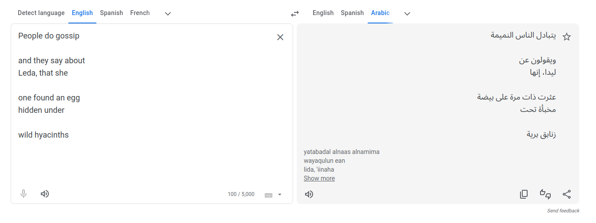
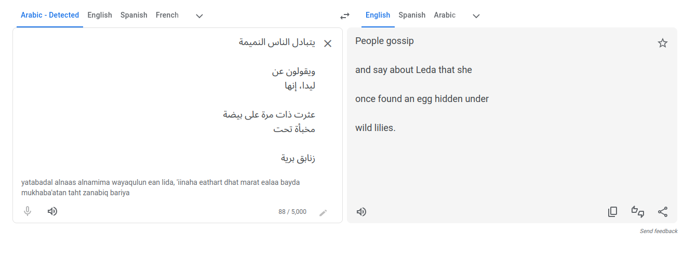
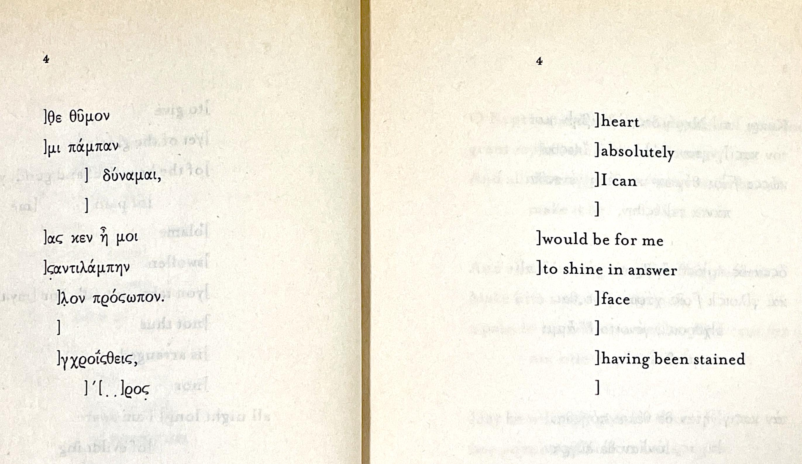
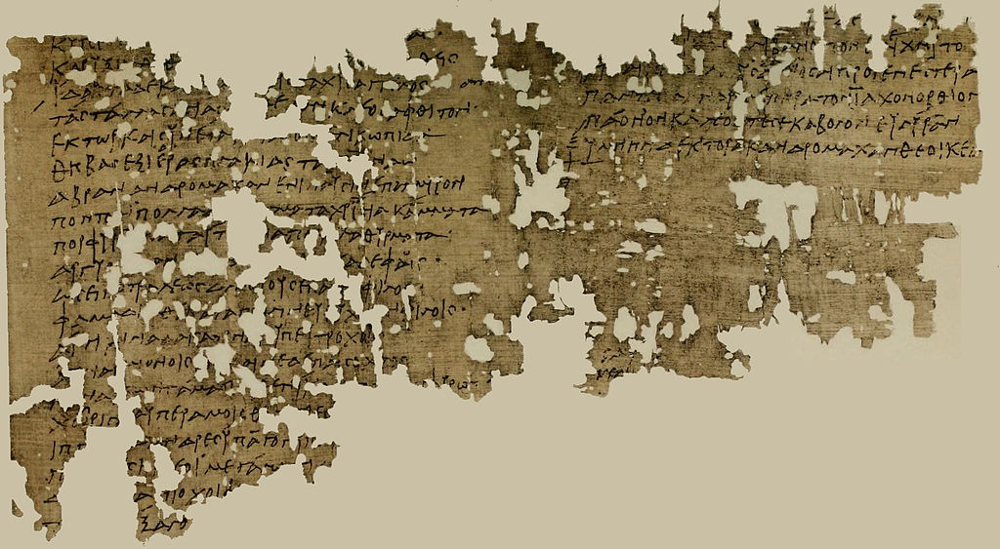

CIE 100-J: Sappho Translation Exercises
Chris Tralie (borrowed from Leslie New and David Aipperspach / Tom Carroll)
Overview
Barnard has translated Sappho's poems from Ancient Greek into English. A translator has to often make educated choices when there isn't a one to one mapping of grammar, rhyme, meaning of words, etc. To complicate things even further, we only have fragments of Sappho's poems. Below are two exercises for you to do to get a cursory idea of these issues in the context of this class.
Exercise 1: Google Translate (3 Points)
Choose one of Sappho's shorter poems the second set of poems (44-84, 87-88, 98-100) and put it in Google Translate, translating it into a language of your choice (non-western languages and/or languages with a different alphabet will give the most interesting results). Then take the translated poem and change the translation back into English.
Answer the following questions:
- What does the original poem evoke in you?
- What language did you translate it into / out of?
- Does the poem evoke the same feeling? Or did important words get changed in a way that changes the meaning?
- Spacing matters in Google Translate. If there is a space between lines in the text, include that space in Google translate.
Below is an example:

Exercise 2: Completing Fragments (3 Points)
As it turns out, we only have fragments of Sappho's poems available. As an example, below is "fragment 4" from If Not, Winter: Fragments of Sappho, by Anne Carson. (2002).
|  |  |
Anne Carson chose to leave the "holes" as empty space, indicated by brackets.
On the other hand, scholars who want to complete them usually do so to the best of their ability knowing what they know about Sappho's work. Take this Carson translation and add your own language, based on your understanding of Sappho, to offer a more "complete" translation, in the manner of the Barnard translations you read.
] heart
] absolutely
] I can
]
] would be for me
] to shine in answer
] face
]
] having been strained
]